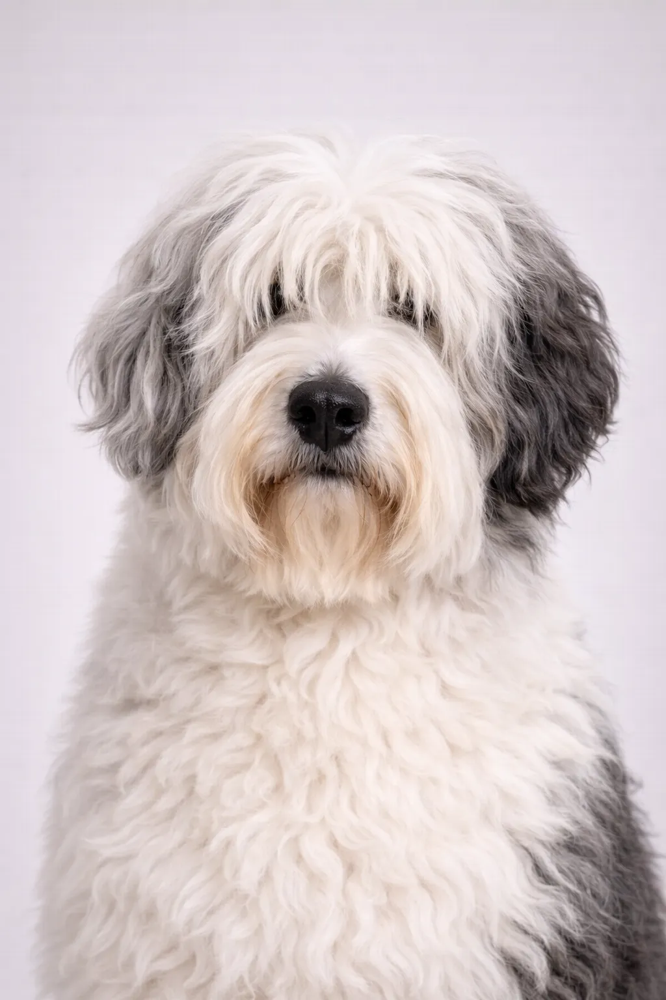

Polish Lowland Sheepdog
Known as PON in Poland, this shaggy herding dog is confident and clever. They're excellent watchdogs and loyal family companions.
17-20 in
31-51 lbs
犬種の評価
性格
概要
Known as PON in Poland, this shaggy herding dog is confident and clever. They're excellent watchdogs and loyal family companions.
性格
The Polish Lowland Sheepdog is known for being confident, clever, perceptive. They're excellent with children and make wonderful family pets. Their intelligence and eagerness to please make training enjoyable. Early socialization helps them develop into well-rounded companions.
健康
Generally healthy with a lifespan of 12-14 年. Common concerns include joint problems and skin conditions. Regular veterinary checkups and preventive care are important. Maintaining a healthy weight helps prevent many health issues.
運動
High energy breed requiring vigorous daily exercise—at least an hour of activity. They thrive with active families who enjoy outdoor activities. Mental stimulation through training and puzzle toys is equally important. Without adequate exercise, they may develop behavioral issues.
⦿ この犬種はあなたに向いていますか？
✓ こんな方におすすめ
- 経験豊富な飼い主
- Active families
- Those wanting a watchdog
✗ こんな方には不向き
- 初めての飼い主
- Those avoiding grooming
総合評価: Known as PON in Poland, this shaggy herding dog is confident and clever. They're excellent watchdogs and loyal family companions.